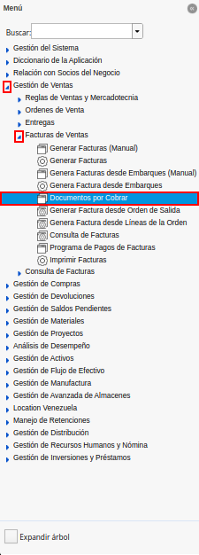
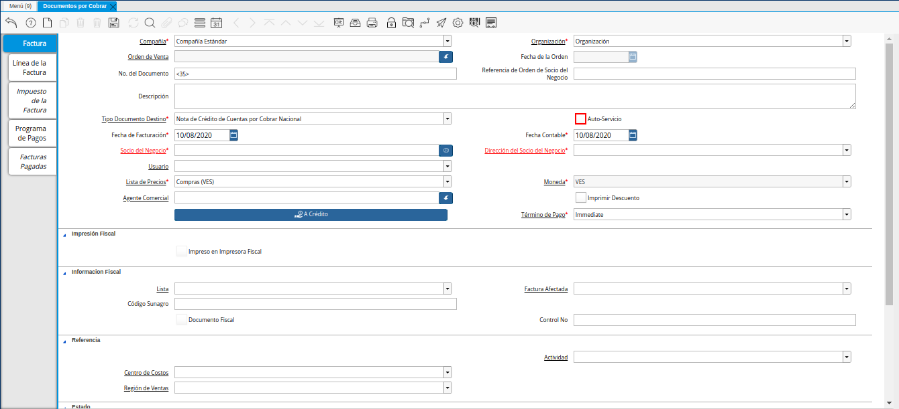
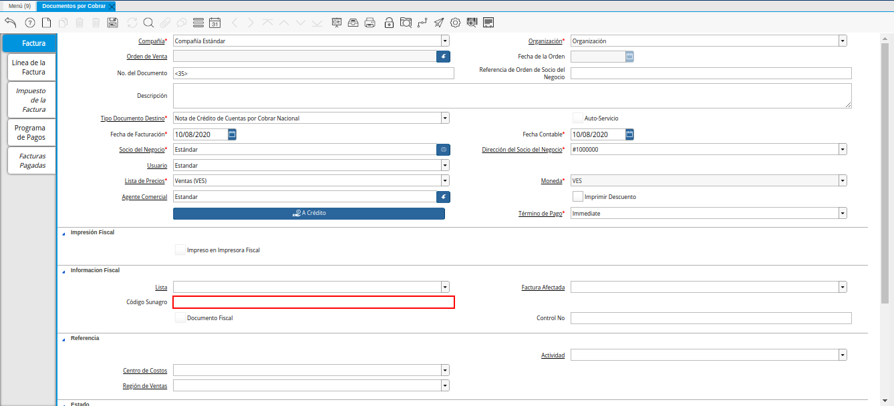
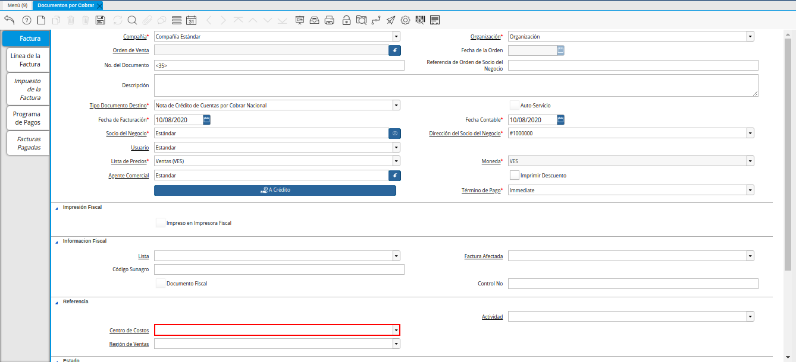
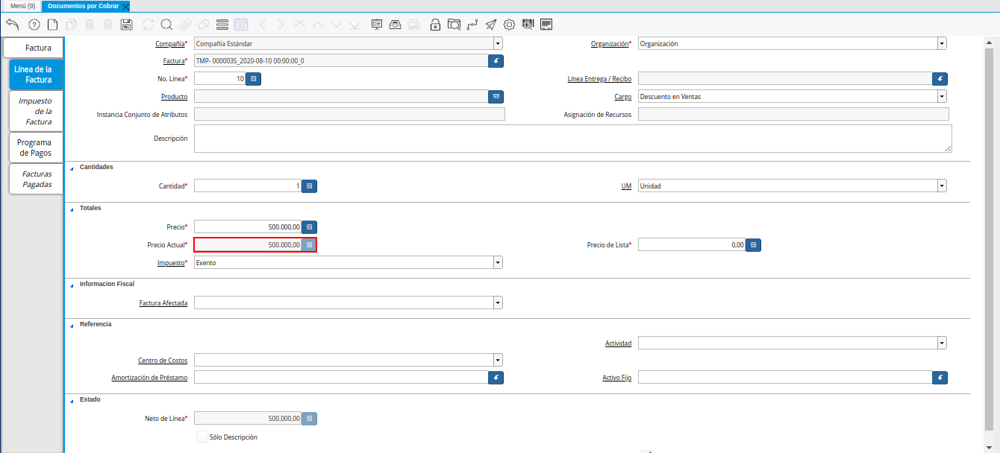
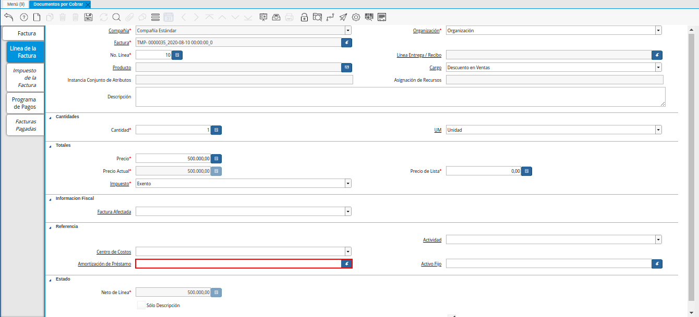
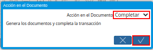

Nota de Crédito
Es un documento que se aplica a una factura, con la finalidad de reflejar un descuento, un cobro de un gasto incurrido de más, o alguna devolución de productos que el socio de negocio tipo cliente haya comprado.
A continuación es explicado el procedimiento para registrar en ADempiere una nota de crédito de cuentas por cobrar.
Registro de Nota de Crédito
Ubique y seleccione en el menú de ADempiere, la carpeta “Gestión de Ventas”, luego seleccione la carpeta “Facturas de Ventas”, por último seleccione la ventana “Documentos por Cobrar”.

Imagen 1. Menú de ADempiere
Podrá visualizar la ventana “Documentos por Cobrar”, con todos los registros de documentos por cobrar cargados a ADempiere.
Imagen 2. Ventana Documentos por Cobrar

Seleccione el icono “Registro Nuevo”, ubicado en la barra de herramientas de ADempiere, para crear un nuevo registro en la ventana “Documentos por Cobrar”.
Imagen 3. Icono Registro Nuevo de la Ventana Documentos por Cobrar
Seleccione en el campo “Organización”, la organización para la cual se encuentra realizando el documento “Nota de Crédito CxC”.
Imagen 4. Campo Organización de la Ventana Documentos por Cobrar
Seleccione en el campo “Orden de Venta”, la orden de venta correspondiente al registro que se encuentra realizando.
Imagen 5. Campo Orden de Venta de la Ventana Documentos por Cobrar
Podrá visualizar en el campo “Fecha de la Orden”, la fecha contable de la orden de venta seleccionada en el campo “Orden de Venta”.
Imagen 6. Campo Fecha de la Orden de la Ventana Documentos por Cobrar
Introduzca en el campo “No. del Documento”, el número de identificación correspondiente al documento que se encuentra realizando.
Imagen 7. Campo No del Documento de la Ventana Documentos por Cobrar
Note
Si no es ingresado ningún valor en el campo, ADempiere tomará el número de secuencia establecido para el tipo de documento al guardar el registro.
Introduzca en el campo “Referencia de Orden de Socio del Negocio”, la referencia de la orden del socio del negocio.
Imagen 8. Campo Referencia de Orden de Socio del Negocio de la Ventana Documentos por Cobrar
Introduzca en el campo “Descripción”, una breve descripción correspondiente al registro que se encuentra realizando.
Imagen 9. Campo Descripción de la Ventana Documentos por Cobrar
Seleccione el tipo de documento a generar en el campo “Tipo de Documento Destino”, la selección de este define el comportamiento del documento que se está elaborando, dicho comportamiento se encuentra explicado en el documento Tipo de Documento elaborado por ERPyA.
Imagen 10. Campo Tipo de Documento Destino de la Ventana Documentos por Cobrar
El checklist “Auto-Servicio”, que el registro es una entrada del autoservicio o se puede cambiar vía autoservicio.

Imagen 11. Checklist Auto Servicio de la Ventana Documentos por Cobrar
Seleccione en el campo “Fecha de Facturación”, la fecha en la cual es aplicada la nota de crédito que se encuentra realizando.
Imagen 12. Campo Fecha de Facturación de la Ventana Documentos por Cobrar
Seleccione en el campo “Fecha Contable”, la fecha en la cual es aplicada la nota de crédito que se encuentra realizando.
Imagen 13. Campo Fecha Contable de la Ventana Documentos por Cobrar
Seleccione en el campo “Socio del Negocio”, el socio del negocio al cual se encuentra aplicando la nota de crédito.
Imagen 14. Campo Socio del Negocio de la Ventana Documentos por Cobrar
Podrá visualizar en el campo “Dirección del Socio del Negocio”, la dirección del socio del negocio seleccionado anteriormente en el campo “Socio del Negocio”.
Imagen 15. Campo Dirección del Socio del Negocio de la Ventana Documentos por Cobrar
Podrá visualizar en el campo “Usuario”, el usuario del socio del negocio seleccionado anteriormente en el campo “Socio del Negocio”.
Imagen 16. Campo Usuario de la Ventana Documentos por Cobrar
Seleccione en el campo “Lista de Precios”, la lista de precios con la cual se encuentra aplicando la nota de crédito.
Imagen 17. Campo Lista de Precios de la Ventana Documentos por Cobrar
Podrá visualizar en el campo “Moneda”, la moneda asociada a la lista de precios seleccionada en el campo “Lista de Precios”.
Imagen 18. Campo Moneda de la Ventana Documentos por Cobrar
Seleccione en el campo “Agente Comercial”, el agente comercial involucrado en la transacción por la cual se encuentra realizando la nota de crédito.
Imagen 19. Campo Agente Comercial de la Ventana Documentos por Cobrar
El checklist “Imprimir Descuento”, imprime el descuento en la factura y la orden.
Imagen 20. Checklist Imprimir Descuento de la Ventana Documentos por Cobrar
Seleccione la opción “A Crédito”, para indicar como se pagará la factura.
Imagen 21. Opción A Crédito de la Ventana Documentos por Cobrar
Seleccione en el campo “Término de Pago”, el término que establece la condición, el método y tiempo de pago de la transacción que se encuentra realizando.
Imagen 22. Campo Término de Pago de la Ventana Documentos por Cobrar
El checklist “Impreso en Impresora Fiscal”, indica que el documento es impreso en impresora fiscal.
Impresora 23. Checklist Impreso en Impresora Fiscal de la Ventana Documentos por Cobrar
Seleccione en el campo “Lista”, la opción correspondiente al registro que se encuentra realizando.
Imagen 24. Campo Lista de la Ventana Documentos por Cobrar
Seleccione en el campo “Factura Afectada”, la factura a la cual le será aplicada la nota de crédito que se encuentra realizando.
Imagen 25. Campo Factura Afectada de la Ventana Documentos por Cobrar
Introduzca en el campo “Código Sunagro”, el código de superintendencia nacional de gestión agroalimentaria.

Imagen 26. Campo Código Sunagro de la Ventana Documentos por Cobrar
El checklist “Documento Fiscal”, indica que el registro en el que se encuentra es un documento fiscal.
Imagen 27. Checklist Documento Fiscal de la Ventana Documentos por Cobrar
Introduzca en el campo “Control No”, el número de control fiscal establecido para el registro que se encuentra realizando.
Imagen 28. Campo Control No de la Ventana Documentos por Cobrar
Seleccione en el campo “Actividad”, la actividad relacionada con el registro que se encuentra realizando.
Imagen 29. Campo Actividad de la Ventana Documentos por Cobrar
Seleccione en el campo “Centro de Costos”, el centro de costos relacionado con el registro que se encuentra realizando.

Imagen 30. Campo Centro de Costos de la Ventana Documentos por Cobrar
Seleccione en el campo “Región de Ventas”, la región de ventas relaconada con el registro que se encuentra realizando.
Imagen 31. Campo Región de Ventas de la Ventana Documentos por Cobrar


Seleccione el icono “Guardar Cambios”, ubicado en la barra de herramientas de ADempiere, para guardar el registro de los campos de la pestaña “Factura”.
Imagen 32. Icono Guardar Cambios de la Ventana Documentos por Cobrar
Línea de la Factura
Seleccione la pestaña “Línea de la Factura”, para cargar los detalles de la nota de crédito que se encuentra realizando.
Imagen 33. Pestaña Línea de la Factura de la Ventana Documentos por Cobrar
Podrá visualizar en el campo “No. Línea”, el número de línea correspondiente al registro que se encuentra realizando en la pestaña “Línea de la Factura”.
Imagen 34. Campo No Línea de la Pestaña Línea de la Factura de la Ventana Documentos por Cobrar
Seleccione en el campo “Producto”, el producto por el cual se encuentra aplicando la nota de crédito.
Imagen 35. Campo Producto de la Pestaña Línea de la Factura de la Ventana Documentos por Cobrar
Seleccione en el campo “Cargo”, el cargo por el cual se encuentra aplicando la nota de crédito.
Imagen 36. Campo Cargo de la Pestaña Línea de la Factura de la Ventana Documentos por Cobrar
Introduzca en el campo “Descripción”, una breve descripción correspondiente al registro que se encuentra realizando.
Imagen 37. Campo Descripción de la Pestaña Línea de la Factura de la Ventana Documentos por Cobrar
Seleccione en el campo “Cantidad”, la cantidad relacionada al registro que se encuentra realizando.
Imagen 38. Campo Cantidad de la Pestaña Línea de la Factura de la Ventana Documentos por Cobrar
Seleccione en el campo “UM”, la unidad de medida relacionada al registro que se encuentra realizando.
Imagen 39. Campo UM de la Pestaña Línea de la Factura de la Ventana Documentos por Cobrar
Introduzca en el campo “Precio”, el precio correspondiente a la nota de crédito que se encuentra realizando.
Imagen 40. Campo Precio de la Pestaña Línea de la Factura de la Ventana Documentos por Cobrar
Podrá visualizar en el campo “Precio Actual”, el precio actual ingresado en el campo “Precio”.

Imagen 41. Campo Precio Actual de la Pestaña Línea de la Factura de la Ventana Documentos por Cobrar
Podrá visualizar en el campo “Precio de Lista”, el precio de lista oficial.
Imagen 42. Campo Precio de Lista de la Pestaña Línea de la Factura de la Ventana Documentos por Cobrar
Seleccione en el campo “Impuesto”, el tipo de impuesto a aplicar en el registro que se encuentra realizando.
Imagen 43. Campo Impuesto de la Pestaña Línea de la Factura de la Ventana Documentos por Cobrar
Seleccione en el campo “Factura Afectada”, la factura afectada para asignar la nota automáticamente.
Imagen 44. Campo Factura Afectada de la Pestaña Línea de la Factura de la Ventana Documentos por Cobrar
Seleccione en el campo “Actividad”, la actividad correspondiente al registro que se encuentra realizando.
Imagen 45. Campo Actividad de la Pestaña Línea de la Factura de la Ventana Documentos por Cobrar
Seleccione en el campo “Centro de Costos”, el centro de costos correspondiente al registro que se encuentra realizando.
Imagen 46. Campo Centro de Costos de la Pestaña Línea de la Factura de la Ventana Documentos por Cobrar
Seleccione en el campo “Amortización de Préstamo”, la amortización de préstamo.

Imagen 47. Campo Amortización de Préstamo de la Pestaña Línea de la Factura de la Ventana Documentos por Cobrar
Seleccione en el campo “Activo Fijo”, el activo fijo relacionado con el registro que se encuentra realizando.
Imagen 48. Campo Activo Fijo de la Pestaña Línea de la Factura de la Ventana Documentos por Cobrar
Podrá visualizar en el campo “Neto de Línea”, el neto de la línea.
Imagen 49. Campo Neto de Línea de la Pestaña Línea de la Factura de la Ventana Documentos por Cobrar


Seleccione el icono “Guardar Cambios”, ubicado en la barra de herramientas de ADempiere, para guardar el registro de los campos de la pestaña “Línea de la Factura”.
Imagen 50. Icono Guardar Cambios de la Pestaña Línea de la Factura de la Ventana Documentos por Cobrar
Seleccione la pestaña principal “Factura” y ubique la opción “Completar”, en la parte inferior izquierda de la ventana.
Imagen 51. Pestaña Factura de la Ventana Documentos por Cobrar
Seleccione la opción “Completar”, para completar el documento “Nota de Crédito de CxC”.
Imagen 52. Opción Completar de la Pestaña Factura de la Ventana Documentos por Cobrar
Seleccione la acción “Completar” y la opción “OK”, para culminar el proceso.

Imagen 53. Acción Completar y Opción OK de la Ventana Documentos por Cobrar


Consultar Asignación de Nota de Crédito Aplicada
Ubique el registro de la factura asociada a la nota de crédito, en este caso se ubica la factura “76” y posteriormente seleccione la pestaña “Facturas Pagadas”.
Imagen 54. Pestaña Facturas Pagadas de la Ventana Documentos por Cobrar

Haga clic contrario en el campo “Asignación” y seleccione la opción “Acercar” en el menú visualizado.
Imagen 55. Acercar Asignación de Pago de la Factura por Cobrar

Podrá visualizar el registro de la asignación creada al completar el documento “Nota de Crédito de CxC”.
Imagen 56. Registro de Asignación de Pago de Nota de Crédito de CxC

Seleccione la pestaña “Asignaciones”, para visualizar la información del monto de la nota de crédito aplicada a la factura.
Imagen 57. Pestaña Asignaciones de la Ventana Consulta de Asignación